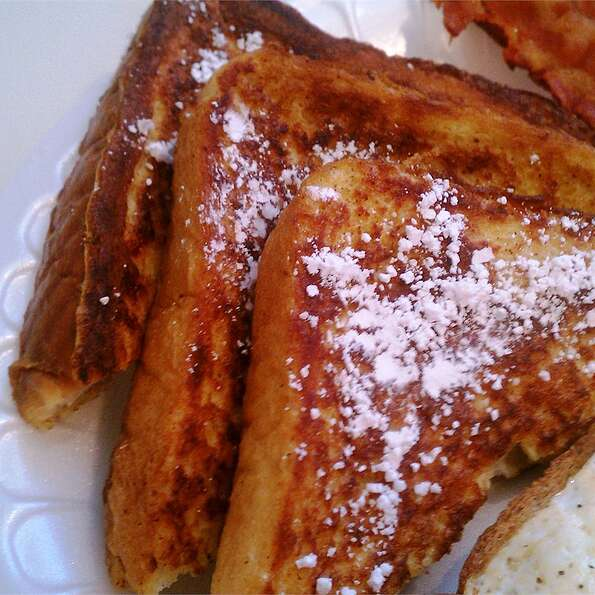

French Toast

Description
French Toast is dish consisting of bread
soaked in beaten eggs, milk as well as other additives before
being pan-fried.
A satisfying start to one's day.
Servings: 4 servings
Ingredients
- 4 1-inch thick slices of bread
- 4 large eggs
- 1/2 cup of milk
- 1/2 tsp vanilla extract
- 1/4 tsp cinnamon
- 2 tbsp butter for frying
- 2 tbsp Maple Syrup
Optional
- Powdered Sugar
- Fresh fruit
Directions
- (Optional) Cut slices into halves or thirds
- In a bowl, whisk together eggs, milk, vanilla and cinnamon
- Dip slices in to the egg mixture
- Cook each side until golden brown
- Top with Maple Syrup and any other toppings of your choice
Nutritional Facts
Per Serving:
266 calories; 11.4g protein; 24.7g carbohydrates;
13.9g fat; 218.7mg cholesterol; 204.4mg sodium